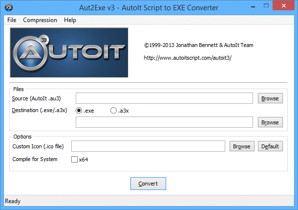
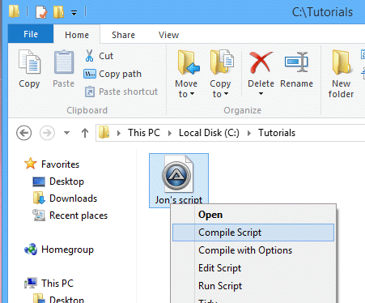

Скрипт .au3 можно скомпилировать в самостоятельный исполняемый файл; такой исполняемый файл можно запускать без установки AutoIt и без наличия AutoIt3.exe на машине. В процессе компиляции скрипт и его файлы #include, а также любые файлы, добавленные через FileInstall, преобразуются в токенизированную форму, которая затем сжимается и шифруется. Так что эти дополнительные файлы во время выполнения не нужны. В зависимости от выбранной опции компиляции "скомпилированный" скрипт либо встраивается в ресурсы самостоятельного интерпретатора-исполняемого файла, который будет его выполнять, либо сохраняется в формате .a3x. Файл .a3x можно подключить к другому скрипту или запустить интерпретатором AutoIt – как самим Autoit3.exe, так и другим скомпилированным скриптом с установленным флагом AutoItExecuteAllowed.
Внимание: компилируемый скрипт должен быть свободен от синтаксических ошибок – процесс компиляции синтаксис не проверяет.
Aut2Exe можно использовать тремя способами:
Доступен только при полной установке.
1. Откройте меню "Пуск" и перейдите в группу AutoIt v3.
2. Нажмите Compile Script to .exe.
3. Появится главное окно Aut2Exe.

4. С помощью кнопок Browse выберите входной (.au3) и выходной (.exe) файлы.
5. При желании можно изменить значок результирующего .exe – просто укажите нужный файл значка (несколько примеров значков лежит в Program Files\AutoIt3\Aut2Exe\Icons).
6. Единственная другая опция, которую может потребоваться изменить, – уровень сжатия (особенно если используется FileInstall для добавления файлов). Установите её через меню Compression. Как и во всех алгоритмах сжатия, чем выше уровень, тем медленнее работа. Однако скорость распаковки (при запуске .exe) одинакова при любом уровне сжатия.
7. Нажмите Convert, чтобы скомпилировать скрипт.
Примечание: скрипты можно компилировать с расширением .a3x. Их следует запускать командой AutoIt.exe filename.a3x. Файл .a3x содержит сам скрипт со всеми #include и файлами FileInstall. Этот формат позволяет распространять файлы меньшего размера, поскольку в каждом скомпилированном скрипте не содержится AutoIt3.exe. Однако AutoIt3.exe должен быть доступен на целевой машине – но достаточно одного только AutoIt3.exe.
Доступен только при полной установке.
1. В Проводнике найдите .au3-файл, который нужно скомпилировать.
2. Щёлкните файл правой кнопкой – откроется контекстное меню.

3. Файл будет тихо скомпилирован с тем же именем, но расширением .exe.
В этом режиме Aut2Exe использует текущие настройки значка/сжатия (от последнего ручного запуска Aut2Exe способом 1).
Программу Aut2Exe.exe можно запускать из командной строки так:
Aut2exe.exe / In < infile.au3 >[/out < outfile.exe >][/icon < iconfile.ico >][/comp 0 - 4][/nopack][/x64][/bin < binfile.bin >]
где:
| Ключ | Назначение | Значение по умолчанию |
|---|---|---|
| /in | <infile.au3> задаёт путь и имя bin-файла, используемого для компиляции файла. | Нет. Файл обязателен |
| /out | <outfile.exe> задаёт путь и имя скомпилированного файла. <outfile.a3x> задаёт путь и имя при создании файла *.a3x. |
Имя входного файла с расширением .exe |
| /icon | <iconfile.ico> задаёт путь и имя файла значка для скомпилированного файла. | Значок по умолчанию |
| /comp | Задаёт уровень сжатия при кодировании скрипта (НЕ связано с UPX). Должно быть число от 0 (без сжатия) до 4 (максимум). |
2 |
| /nopack | Указывает, что файл не нужно сжимать UPX после компиляции. | pack |
| /pack | Указывает, что файл нужно сжать UPX после компиляции. | pack |
| /x64 | Указывает, что скрипт нужно компилировать для систем с архитектурой x64 (64 бита). | См. примечания |
| /x86 | Указывает, что скрипт нужно компилировать для систем с архитектурой x86 (32 бита). | См. примечания |
| /console | Указывает, что скрипт нужно компилировать как консольное приложение. | Windows-приложение (/gui) |
| /gui | Указывает, что скрипт нужно компилировать как Windows-приложение. | Windows-приложение (/gui) |
/in c:\myscript.au3 /out c:\myapp.exe /icon c:\myicon.ico /x64
Создаст c:\myapp.exe с обычным сжатием, заданным значком, скомпилированный для систем архитектуры x64.
/in c:\myscript.au3
Создаст unicode-файл c:\myscript.exe с обычным сжатием, со стандартным значком AutoIt, для запуска на 32-битных системах.
Длинные имена файлов следует заключать в двойные кавычки, например "C:\Program Files\Test\test.au3".
За исключением /in все ключи необязательны.
По умолчанию 32-разрядный компилятор создаёт 32-разрядный исполняемый файл, а 64-разрядный – 64-разрядный. Используйте параметры /x86 и /x64 для явного указания.
Ключи /pass и /nodecompile устарели начиная с версии 3.2.8.1. Они игнорируются и удалены из этого списка.
Ключи /ansi и /unicode устарели начиная с версии 3.3.0.0.
Ключ /bin устарел начиная с версии 3.3.10.0 и удалён из этого списка.
Скомпилированный скрипт и дополнительные файлы, добавленные через FileInstall, сжимаются собственной схемой Jon.